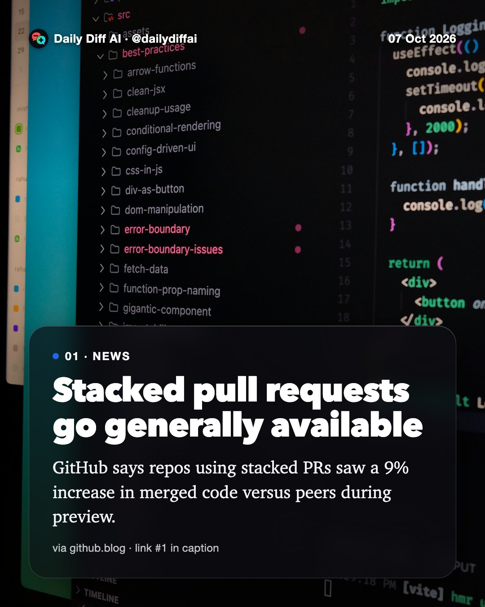
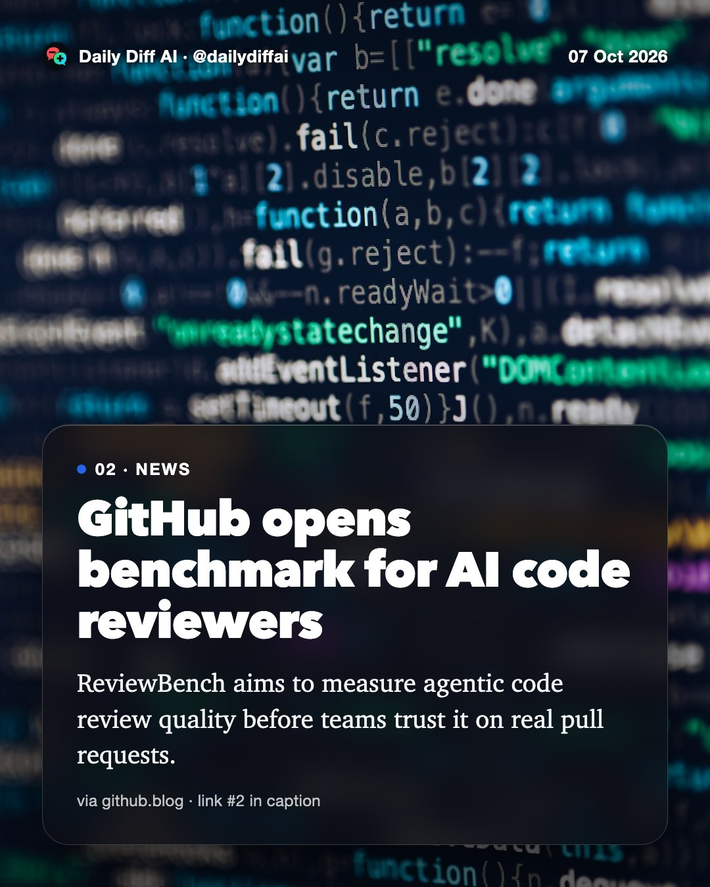
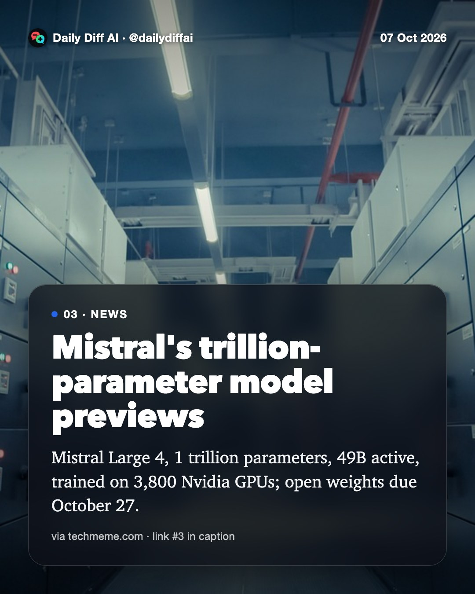
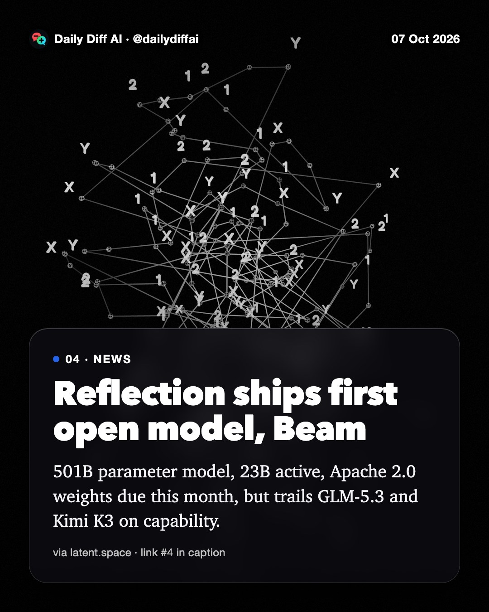
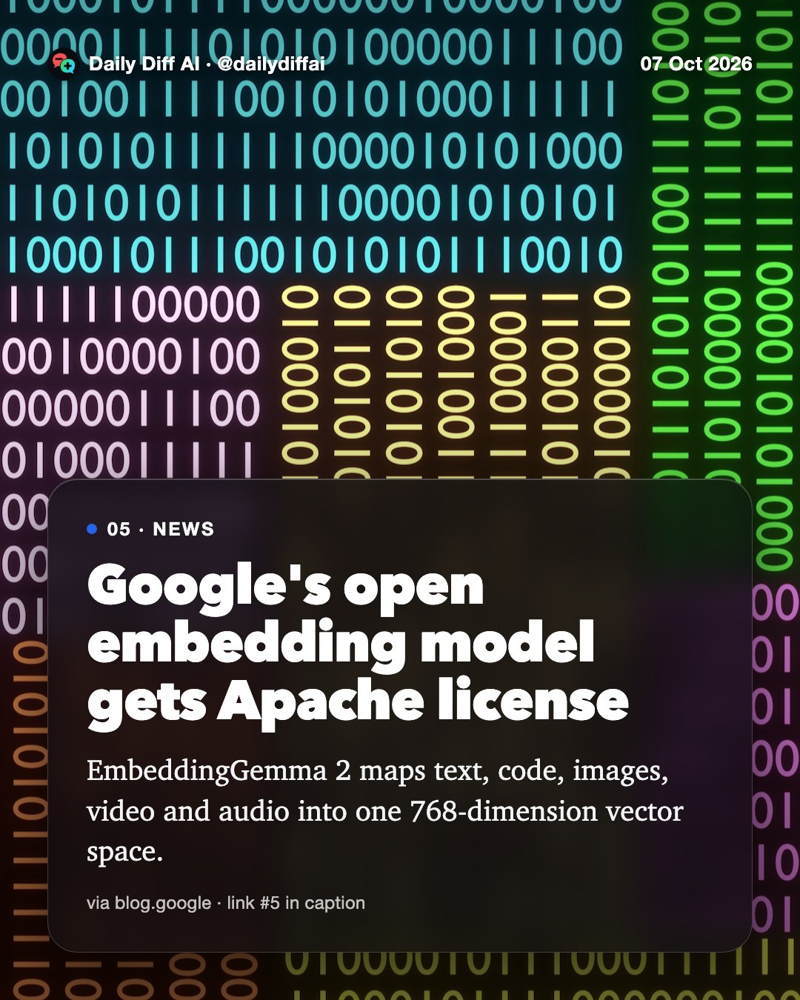
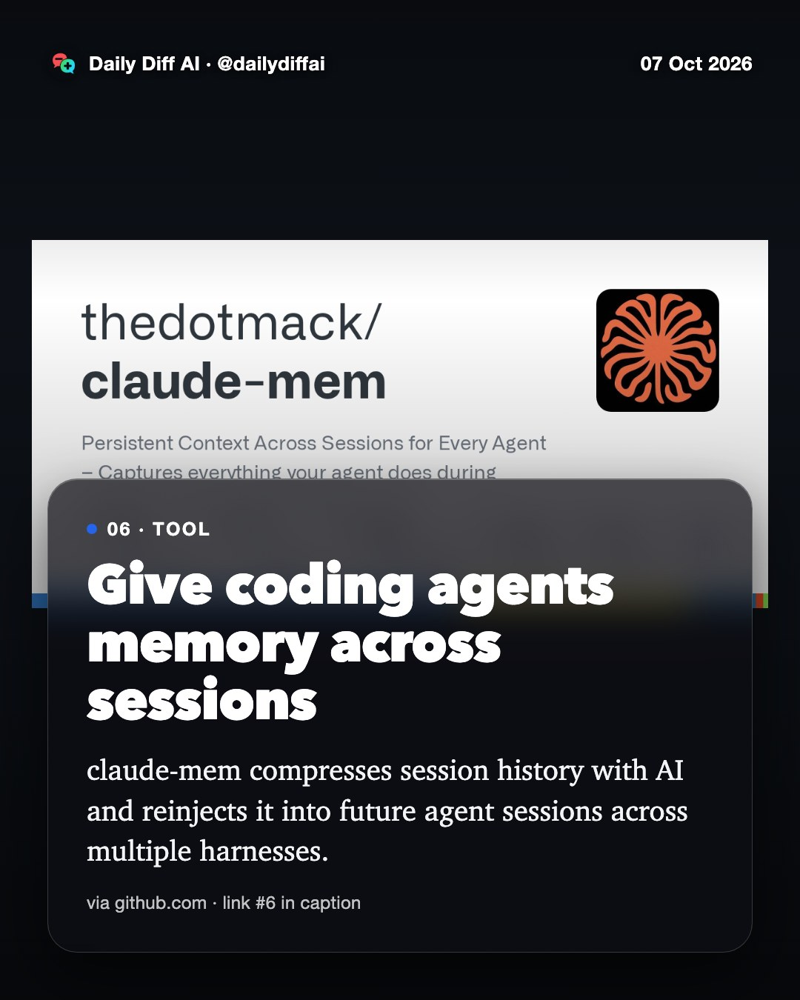
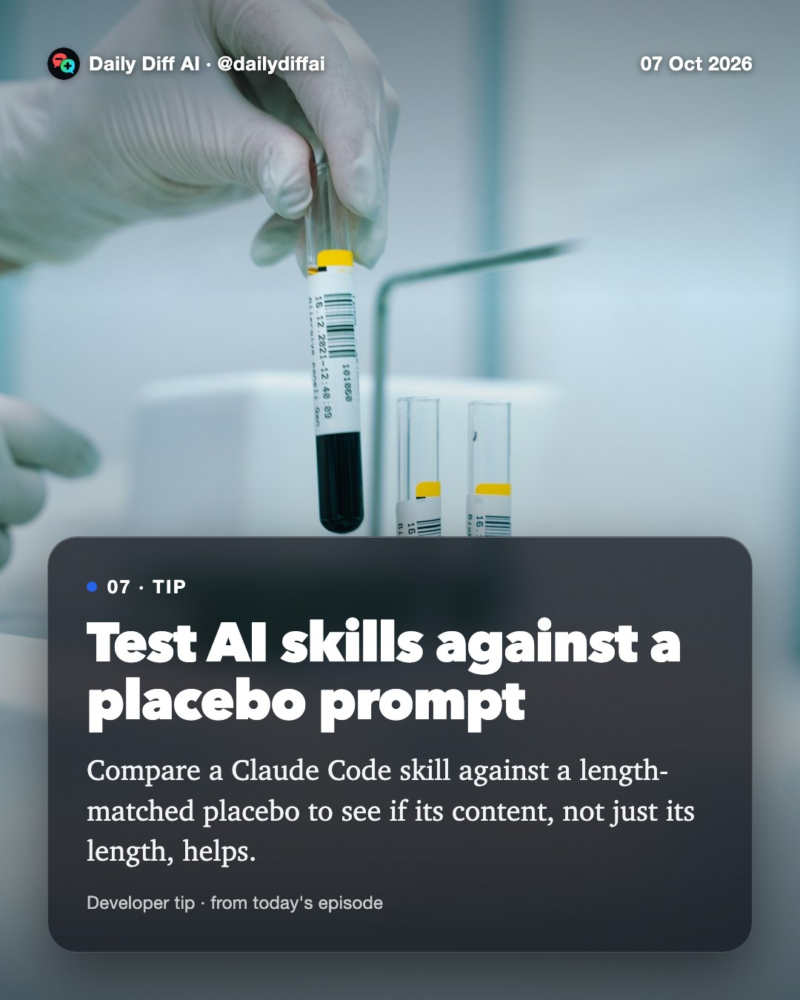

Daily Diff AI

Stacked pull requests go generally available
GitHub says repos using stacked PRs saw a 9% increase in merged code versus peers during preview.
Read on github.blog →
GitHub opens benchmark for AI code reviewers
ReviewBench aims to measure agentic code review quality before teams trust it on real pull requests.
Read on github.blog →
Mistral's trillion-parameter model previews
Mistral Large 4, 1 trillion parameters, 49B active, trained on 3,800 Nvidia GPUs; open weights due October 27.
Read on techmeme.com →
Reflection ships first open model, Beam
501B parameter model, 23B active, Apache 2.0 weights due this month, but trails GLM-5.3 and Kimi K3 on capability.
Read on latent.space →
Google's open embedding model gets Apache license
EmbeddingGemma 2 maps text, code, images, video and audio into one 768-dimension vector space.
Read on blog.google →
Give coding agents memory across sessions
claude-mem compresses session history with AI and reinjects it into future agent sessions across multiple harnesses.
Read on github.com →
Test AI skills against a placebo prompt
Compare a Claude Code skill against a length-matched placebo to see if its content, not just its length, helps.